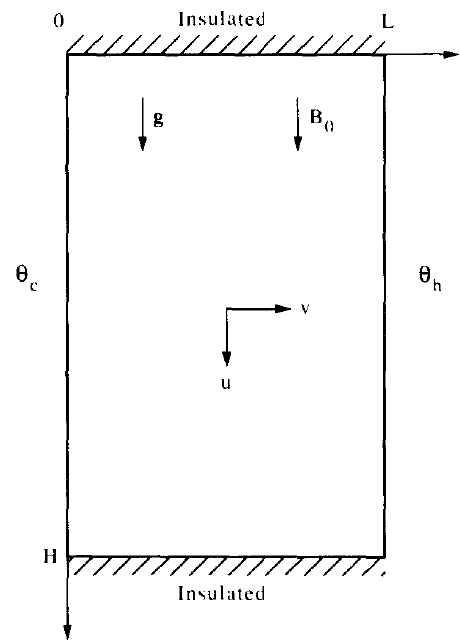

MHD-Natural Convection
Square Enclosure
Consider a two-dimensional enclosure of height \(H\) and horizontal length \(L\). The enclosure is filled with a Newtonian fluid such as air or water.

We are interested in the transient behavior of the cavity fluid as the sidewalls are instantaneously heated and, respectively, cooled to temperatures \(+\Delta T/2\) and \(-\Delta T/2\). The top and bottom walls \((y=0,H)\) remain insulated throughout this experiment. Initially, the fluid is isothermal \((T=0)\) and motionless \((u=v=0)\) everywhere inside the cavity.
Balance Equations
The equations governing the conservation of mass, momentum, and energy at every point in the cavity are
\(\displaystyle\frac{\partial u}{\partial x}+\frac{\partial v}{\partial y}=0\)
\(\displaystyle\frac{\partial u}{\partial t}+u \frac{\partial u}{\partial x}+v \frac{\partial u}{\partial y}=-\frac{1}{\rho} \frac{\partial P}{\partial x}+\nu\left(\frac{\partial^{2} u}{\partial x^{2}}+\frac{\partial^{2} u}{\partial y^{2}}\right)-\displaystyle\frac{\sigma B_{0}^{2}}{\rho}u\)
\(\displaystyle\frac{\partial v}{\partial t}+u \frac{\partial v}{\partial x}+v \frac{\partial v}{\partial y}=-\frac{1}{\rho} \frac{\partial P}{\partial y}+\nu\left(\frac{\partial^{2} v}{\partial x^{2}}+\frac{\partial^{2} v}{\partial y^{2}}\right)-g\left[1-\beta\left(T-T_{0}\right)\right]\)
\(\displaystyle\frac{\partial T}{\partial t}+u \frac{\partial T}{\partial x}+v \frac{\partial T}{\partial y}=\alpha\left(\frac{\partial^{2} T}{\partial x^{2}}+\frac{\partial^{2} T}{\partial y^{2}}\right)\)
Note that in writing these equations, we modeled the fluid as Boussinesq-incompressible, in other words, \(\rho=constant\) everywhere except in the body force term of the \(y\) momentum equation, where it is replaced by \(\rho[1-\beta (T-T_{0})]\). The fluid is permeated by a uniform magnetic field \(B_{0}\) along the y direction, parallel to gravity. Further we assume that the induced electric current does not distort appreciably the applied magnetic field.
Análise de Escala - Bejan
Instead of solving the above equations numerically, we rely on pure scale analysis to predict theoretically the types of flow and heat transfer patterns that can develop in the enclosure. Immediately after \(t=0\), the fluid bordering each sidewall is motionless: This means that near the sidewall, the energy equation expresses a balance between thermal inertia and conduction normal to the wall,
\(\frac{\Delta T}{t} \sim \alpha \frac{\Delta T}{\delta_{T}^{2}}.\)
This equality of scales follows from recognizing, \(\Delta T\), \(t\), and \(\delta_{t}\) as the scales of changes in \(T\), \(t\), and \(x\) in the energy equation. In the same equation, we took \(u=v=0\); we also recognized that \(\partial^{2} T/\partial y^{2} << \partial^{2} T/\partial x^{2}\) because near \(t=0^{+}\),the thermal boundary layer thickness \(\delta_{t}\) is much smaller than the enclosure height (note that \(y\sim H\) and \(x \sim \delta_{t})\). A equação acima dictates that immediately following \(t=0\) each sidewall is coated with a conduction layer the thickness of which increases as
\(\delta_{T} \sim(\alpha t)^{1 / 2}.\)
The layer \(\delta_{T}\) rises along the heated wall. The velocity scale of this motion \(v\) is easier to see if we first eliminate the pressure \(P\) between the two momentum equations:
$
$
This new equation contains four basic groups of terms: inertia terms on the left-hand side and four viscous diffusion terms plus the buoyancy and magnetism terms on the right-hand side. It is easy to show that the four terms that dominate each basic group are
\(\underbrace{\displaystyle\frac{\partial^{2} v}{\partial x \partial t}}_{Inertia}, \quad \quad \underbrace{\nu\displaystyle\frac{\partial^{3} v}{\partial x^{3}}}_{Friction}, \quad \quad \underbrace{g \beta \displaystyle\frac{\partial T}{\partial x}}_{Buoyancy} , \quad \quad \underbrace{\displaystyle\frac{\sigma B_{0}^{2}}{\rho} \frac{\partial u}{\partial y} \rightarrow \frac{\sigma B_{0}^{2}}{\rho} \frac{\partial v}{\partial x} }_{Magnetism}.\)
In terms of representative scales, the momentum balance:
$:nbsphinx-math:displaystyle\frac{v}{\delta_{T} t}, \quad\quad `:nbsphinx-math:nu :nbsphinx-math:displaystyle`:nbsphinx-math:frac{v}{delta_{T}^{3}} \quad\quad `:nbsphinx-math:sim :nbsphinx-math:quad :nbsphinx-math:displaystyle`:nbsphinx-math:frac{g beta Delta T}{delta_{T}} , \quad\quad `:nbsphinx-math:frac{sigma B_{0}^{2}}{rho}` \frac{v}{\delta_{T}} $
The driving force in this balance is the buoyancy effect \((g\beta\Delta T)/\delta_{T}\), wich is not zero. It is important to determine whether the buoyancy effect is balanced by friction or inertia. Dividing the above equation through the friction scale and recalling that \(\delta_{T}^{2}\sim \alpha t\) yields:
$:nbsphinx-math:underbrace{displaystylefrac{1}{Pr}}{Inertia}, :nbsphinx-math:`quad `:nbsphinx-math:`quad `:nbsphinx-math:`underbrace{1}`{Friction}, \quad `:nbsphinx-math:sim :nbsphinx-math:quad :nbsphinx-math:underbrace{ displaystylefrac{gbetaDelta Tdelta_{T}^{2}}{nu v} }`{Buoyancy} , :nbsphinx-math:`quad `:nbsphinx-math:`quad `:nbsphinx-math:`underbrace{displaystylefrac{sigma B_{0}^{2}delta_{T}^{2}}{rhonu} }`{Magnetism} \quad `:nbsphinx-math:quad` \longrightarrow `:nbsphinx-math:quad :nbsphinx-math:quad :nbsphinx-math:displaystyle`:nbsphinx-math:frac{1}{Pr}`+1- :nbsphinx-math:displaystyle`:nbsphinx-math:frac{sigma B_{0}^{2}delta_{T}^{2}}{mu} \approx `:nbsphinx-math:frac{gbetaDelta Tdelta_{T}^{2}}{nu v}` $
Therefore, for fluids with Prandtl number of order 1 or greater, the correct momentum balance at \(t=0^{+}\) is between buoyancy and friction,
\(1 \quad \sim \quad \displaystyle\frac{g\beta\Delta T\delta_{T}^{2}}{\nu v} \quad \rightarrow \quad v \quad \sim \quad \displaystyle\frac{g\beta\Delta T\delta_{T}^{2}}{\nu }\)
This velocity scale is valid for fluids such as water and oils (\(Pr>1\)) and is marginally valid for gases (\(Pr\sim 1\)).
Análise de Escala - Proposta
Instead of solving the above equations numerically, we rely on pure scale analysis to predict theoretically the types of flow and heat transfer patterns that can develop in the enclosure. Immediately after \(t=0\), the fluid bordering each sidewall is motionless: This means that near the sidewall, the energy equation expresses a balance between thermal inertia and conduction normal to the wall,
\(\frac{\Delta T}{t} \sim \alpha \frac{\Delta T}{\delta_{T}^{2}}.\)
This equality of scales follows from recognizing, \(\Delta T\), \(t\), and \(\delta_{t}\) as the scales of changes in \(T\), \(t\), and \(x\) in the energy equation. In the same equation, we took \(u=v=0\); we also recognized that \(\partial^{2} T/\partial y^{2} << \partial^{2} T/\partial x^{2}\) because near \(t=0^{+}\),the thermal boundary layer thickness \(\delta_{t}\) is much smaller than the enclosure height (note that \(y\sim H\) and \(x \sim \delta_{t})\). A equação acima dictates that immediately following \(t=0\) each sidewall is coated with a conduction layer the thickness of which increases as
\(\delta_{T} \sim(\alpha t)^{1 / 2}.\)
The layer \(\delta_{T}\) rises along the heated wall. The velocity scale of this motion \(v\) is easier to see if we first eliminate the pressure \(P\) between the two momentum equations:
\(\begin{aligned} \frac{\partial}{\partial x}\left(\frac{\partial v}{\partial t}+u \frac{\partial v}{\partial x}+v \frac{\partial v}{\partial y}\right)-\frac{\partial}{\partial y}\left(\frac{\partial u}{\partial t}+u \frac{\partial u}{\partial x}+v \frac{\partial u}{\partial y}\right)= \\ =\nu\left[\frac{\partial}{\partial x}\left(\frac{\partial^{2} v}{\partial x^{2}}+\frac{\partial^{2} v}{\partial y^{2}}\right)-\frac{\partial}{\partial y}\left(\frac{\partial^{2} u}{\partial x^{2}}+\frac{\partial^{2} u}{\partial y^{2}}\right)\right]+g \beta \frac{\partial T}{\partial x}+\frac{\sigma B_{0}^{2}}{\rho}\frac{\partial u}{\partial y} \end{aligned}\)
This new equation contains four basic groups of terms: inertia terms on the left-hand side and four viscous diffusion terms plus the buoyancy and magnetism terms on the right-hand side. It is easy to show that the four terms that dominate each basic group are
\(\underbrace{\displaystyle\frac{\partial^{2} v}{\partial x \partial t}}_{Inertia}, \quad \quad \underbrace{\nu\displaystyle\frac{\partial^{3} v}{\partial x^{3}}}_{Friction}, \quad \quad \underbrace{g \beta \displaystyle\frac{\partial T}{\partial x}}_{Buoyancy} , \quad \quad \underbrace{\displaystyle\frac{\sigma B_{0}^{2}}{\rho} \frac{\partial u}{\partial y} \rightarrow \frac{\sigma B_{0}^{2}}{\rho} \frac{\partial v}{\partial x} }_{Magnetism}.\)
In terms of representative scales, the momentum balance:
$ \displaystyle\frac{v}{\delta_{T} t}, \quad\quad `:nbsphinx-math:nu :nbsphinx-math:displaystyle`:nbsphinx-math:frac{v}{delta_{T}^{3}} \quad\quad `:nbsphinx-math:sim :nbsphinx-math:quad :nbsphinx-math:displaystyle`:nbsphinx-math:frac{g beta Delta T}{delta_{T}} , \quad\quad `:nbsphinx-math:frac{sigma B_{0}^{2}}{rho}` \frac{v}{\delta_{T}} $
The driving force in this balance is the buoyancy effect \((g\beta\Delta T)/\delta_{T}\), wich is not zero. It is important to determine whether the buoyancy effect is balanced by friction or inertia. Dividing the above equation through the friction scale and recalling that \(\delta_{T}^{2}\sim \alpha t\) yields:
$:nbsphinx-math:underbrace{displaystylefrac{1}{Pr}}{Inertia}, :nbsphinx-math:`quad `:nbsphinx-math:`quad `:nbsphinx-math:`underbrace{1}`{Friction}, \quad `:nbsphinx-math:sim :nbsphinx-math:quad :nbsphinx-math:underbrace{ displaystylefrac{gbetaDelta Tdelta_{T}^{2}}{nu v} }`{Buoyancy} , :nbsphinx-math:`quad `:nbsphinx-math:`quad `:nbsphinx-math:`underbrace{displaystylefrac{sigma B_{0}^{2}delta_{T}^{2}}{rhonu} }`{Magnetism} \quad `:nbsphinx-math:quad` \longrightarrow `:nbsphinx-math:quad :nbsphinx-math:quad :nbsphinx-math:displaystyle`:nbsphinx-math:frac{1}{Pr}`+1- :nbsphinx-math:displaystyle`:nbsphinx-math:frac{sigma B_{0}^{2}delta_{T}^{2}}{mu} \approx `:nbsphinx-math:frac{gbetaDelta Tdelta_{T}^{2}}{nu v}` $
Therefore, for fluids with Prandtl number of order 1 or greater, the correct momentum balance at \(t=0^{+}\) is between buoyancy and friction,
\(1 \quad \sim \quad \displaystyle\frac{g\beta\Delta T\delta_{T}^{2}}{\nu v} \quad \rightarrow \quad v \quad \sim \quad \displaystyle\frac{g\beta\Delta T\delta_{T}^{2}}{\nu }\)
This velocity scale is valid for fluids such as water and oils (\(Pr>1\)) and is marginally valid for gases (\(Pr\sim 1\)).
Next, we turn our attention back to the energy equation. The heat conducted from the sidewall into the fluid layer \(\delta_{T}\) is no longer spent solely on thickening the layer: Part of this heat input is carried away by the layer \(\delta_{T}\) rising with velocity \(v\). Thus, in the energy equation, we see a competition among three distinct effects:
\(\underbrace{\displaystyle\frac{\Delta T}{t}}_{Inertia}, \quad \quad \underbrace{v\displaystyle\frac{\Delta T}{H}}_{Convection}, \quad \quad \underbrace{\alpha\displaystyle\frac{\Delta T}{\delta_{T}^{2}}}_{Conduction}.\)
As \(t\) increases, the convection effect increases [\(v\sim t\)], while the effect of inertia decreases in importance. There comes a time \(t_{f}\) when the energy equation expresses a balance between the heat conducted from the wall and the enthalpy carried away vertically by the buoyant layer,
\(v\displaystyle\frac{\Delta T}{H}\sim \alpha\frac{\Delta T}{\delta_{T}^{2}} \quad \rightarrow \quad t_{f}\sim \left( \frac{\nu H}{g\beta \Delta T \alpha} \right)^{1/2}.\)
At such a time, the layer thickness is
\(\delta_{T,f} \sim (\alpha t_{f})^{1/2} \sim HRa^{-1/4}\)
where \(Ra_{H}\) is the Rayleigh number based on the enclosure height,
\(Ra_{H}=\displaystyle\frac{g\beta \Delta T H^{3}}{\alpha\nu}.\)
The time \(t_{f}\) when the \(\delta_{T}\) layer becomes convective could have also been determined by setting inertia ∼ convection in eq. (5.12). Note further that beyond the time \(t_{f}\), the convection ∼ conduction balance in eq. (5.12) is preserved only if both \(v\) and \(\delta_{T}\) no longer increase in time. Therefore, beyond \(t\sim t_{f}\), the thermal layers along each sidewall reach a steady state characterized by an energy balance between conduction and convection and a momentum balance between buoyancy and viscous diffusion.
In addition to thermal layers of thickness \(\delta_{T,f}\), the sidewalls develop viscous (velocity) wall jets. The thickness of these jets \(\delta_{v}\) from the momentum balance (5.7) for the region of thickness \(x \sim \delta_{v}\) outside the thermal layer. In this region, the buoyancy effect is minor, and we have a balance between inertia and viscous diffusion,
\(\displaystyle\frac{v}{\delta_{v}t}\sim \nu\frac{v}{\delta_{v}^{3}} \quad \rightarrow \quad \delta_{v}\sim (\nu t)^{1/2} \sim Pr^{1/2}\delta_{T}.\)
In the steady state, \(t > t_{f}\), the fluid near each sidewall is characterized by a two-layer structure: a thermal boundary layer of thickness \(\delta_{T,f}\) and a thicker wall jet \(\delta_{v,f} \sim Pr^{1/2}\delta_{T,f}\). The development of this structure is shown in Figura abaixo.
[ ]: